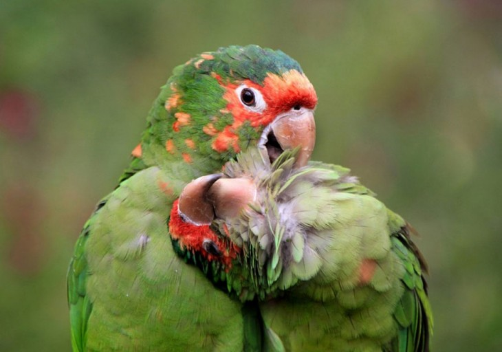

<!DOCTYPE html>
<html lang="en">
  <head>
    <meta charset="utf-8" />
    <meta name="viewport" content="width=device-width, initial-scale=1" />
    <meta name="description" content="" />
    <meta name="author" content="Guillermo Toranzo Perez" />
    <meta name="generator" content="Hugo 0.84.0" />
    <title>IslaJ · Latir Ambiental</title>

    <!-- Bootstrap core CSS -->
    <link href="bootstrap-5.0.2-dist/css/bootstrap.min.css" rel="stylesheet" />

    <link href="fontawesome-free-6.5.2-web/css/all.min.css" rel="stylesheet" />

    <style>
      .bd-placeholder-img {
        font-size: 1.125rem;
        text-anchor: middle;
        -webkit-user-select: none;
        -moz-user-select: none;
        user-select: none;
      }

      @media (min-width: 768px) {
        .bd-placeholder-img-lg {
          font-size: 3.5rem;
        }
      }
    </style>
    <!-- Custom styles for this template -->
    <link href="css/cheatsheet.css" rel="stylesheet" />
    <link rel="icon" type="image/png" href="images/faviconX400.png" />
  </head>
  <body class="bg-light">
    <!-- Corregir header -->
    <header
      class="bd-header bg-light py-3 d-flex align-items-stretch border-bottom border-light"
    >
      <nav
        class="navbar navbar-expand-lg navbar-light bg-light rounded"
        aria-label="Eleventh navbar example"
      >
        <div class="container-fluid">
          <a
            class="navbar-brand"
            href="https://guitoranzo.github.io/latir_ambiental/"
          >
            
            Latir ambiental</a
          >
          <button
            class="navbar-toggler"
            type="button"
            data-bs-toggle="collapse"
            data-bs-target="#navbarsExample09"
            aria-controls="navbarsExample09"
            aria-expanded="false"
            aria-label="Toggle navigation"
          >
            <span class="navbar-toggler-icon"></span>
          </button>
          <div class="collapse navbar-collapse" id="navbarsExample09">
            <ul class="navbar-nav me-auto mb-2 mb-lg-0">
              <!--  -->
              <li class="nav-item dropdown">
                <a
                  class="nav-link active dropdown-toggle"
                  href="#"
                  id="dropdown09"
                  data-bs-toggle="dropdown"
                  aria-expanded="false"
                  >Áreas Protegidas</a
                >
                <ul class="dropdown-menu" aria-labelledby="dropdown09">
                  <li>
                    <a class="dropdown-item" href="bosques.html">Bosques</a>
                  </li>
                  <li>
                    <a class="dropdown-item" href="manglares.html">Manglares</a>
                  </li>
                  <li>
                    <a class="dropdown-item" href="playas.html">Playas</a>
                  </li>
                </ul>
              </li>
              <!--  -->
              <li class="nav-item dropdown">
                <a
                  class="nav-link active dropdown-toggle"
                  href="#"
                  id="dropdown09"
                  data-bs-toggle="dropdown"
                  aria-expanded="false"
                  >Nuevas Legislaciones</a
                >
                <ul class="dropdown-menu" aria-labelledby="dropdown09">
                  <li>
                    <a
                      class="dropdown-item"
                      href="docs/legislaciones/Ley_150-goc-No87-2023.pdf"
                      >Ley 150</a
                    >
                  </li>
                  <li>
                    <a
                      class="dropdown-item"
                      href="docs/legislaciones/Ley_155-goc-No84-2023.pdf"
                      >Ley 155</a
                    >
                  </li>
                  <li>
                    <a
                      class="dropdown-item"
                      href="docs/legislaciones/DL_AP_concilado_DJ_ANPP-11.9.23.pdf"
                      >DL-AP concilado DJ-ANPP</a
                    >
                  </li>
                </ul>
              </li>
              <!--  -->
              <li class="nav-item dropdown">
                <a
                  class="nav-link active dropdown-toggle"
                  href="#"
                  id="dropdown09"
                  data-bs-toggle="dropdown"
                  aria-expanded="false"
                  >Galería</a
                >
                <ul class="dropdown-menu" aria-labelledby="dropdown09">
                  <li>
                    <a class="dropdown-item" href="afiches.html">Afiches</a>
                  </li>
                  <li>
                    <a class="dropdown-item" href="galeria.html">Fotos</a>
                  </li>
                  <li>
                    <a class="dropdown-item" href="videos.html">Videos</a>
                  </li>
                </ul>
              </li>
            </ul>
          </div>
        </div>
      </nav>
    </header>
    <!--  -->
    <aside
      class="bd-aside sticky-xl-top text-muted align-self-start mb-3 mb-xl-5 px-2"
    >
      <h2 class="h6 pt-4 pb-3 mb-4 border-bottom">En esta pagina</h2>
      <nav class="small" id="toc">
        <ul class="list-unstyled">
          <li class="my-2">
            <button
              class="btn d-inline-flex align-items-center collapsed"
              data-bs-toggle="collapse"
              aria-expanded="false"
              data-bs-target="#contents-collapse"
              aria-controls="contents-collapse"
            >
              Contenido
            </button>
            <ul class="list-unstyled ps-3 collapse" id="contents-collapse">
              <li>
                <a
                  class="d-inline-flex align-items-center rounded"
                  href="#typography"
                  >Caracterización de la Isla de la Juventud</a
                >
              </li>
              <li>
                <a
                  class="d-inline-flex align-items-center rounded"
                  href="#images"
                  >Imágen</a
                >
              </li>
              <li>
                <a
                  class="d-inline-flex align-items-center rounded"
                  href="#info-download"
                  >Información de Descarga</a
                >
              </li>
            </ul>
          </li>
        </ul>
      </nav>
    </aside>
    <!--  -->
    <div class="bd-cheatsheet container-fluid bg-body">
      <section id="content">
        <h2 class="sticky-xl-top fw-bold pt-3 pt-xl-5 pb-2 pb-xl-3">
          Isla de la Juventud
        </h2>

        <article class="my-3" id="typography">
          <div
            class="bd-heading sticky-xl-top align-self-start mt-5 mb-3 mt-xl-0 mb-xl-2"
          >
            <h3>Información</h3>
            <a
              class="d-flex align-items-center"
              href="docs/VE-ecosistemas-MANGLAR-en-AP2024.docx"
              >Documentación</a
            >
          </div>
          <!--  -->
          <div>
            <div class="bd-example">
              <p class="h1">Caracterización de la Isla de la Juventud:</p>
            </div>
            <div class="bd-example">
              <blockquote class="blockquote">
                <p>
                  Es la segunda isla en extensión de Cuba, con más de 2.400
                  kilómetros cuadrados, y junto a otros 600 cayos más conforma
                  el archipiélago de Canarreos. Separada de la isla grande por
                  el Golfo de Batabanó, fue descubierta por Colón en 1494 y
                  bautizada como La Evangelista, una anécdota más en su larga
                  lista de nombres. Siguanea, Camaraco y Guanaja para los
                  aborígenes, a lo largo de su historia ha adoptado alias como
                  Isla de las Cotorras, Colonia Reina Amalia, Isla de los
                  Piratas e, incluso, Isla del Tesoro. Cuentan que Robert Louis
                  Stevenson se basó en su pasado de piratas para escribir su
                  famosa novela, siguiendo la historia del corsario Latrobe, que
                  escondió un cargamento de oro y joyas que se consideró real
                  tras encontrarse algunos objetos de valor en 1919. Los
                  españoles la conocieron también como Isla de los Deportados,
                  luego se llamó Isla Pinos por los bosques que cubrían la
                  región, para finalmente, el 2 de agosto de 1978, adoptar su
                  nombre actual en honor a los jóvenes que arrimaron el hombro
                  tras el huracán Alma favoreciendo la recuperación de la isla.
                </p>
                <p>
                  Isla de la Juventud puede alcanzarse por aire con Cubana de
                  Aviación o Aero-Gaviota, que opera de un vuelo diario desde La
                  Habana hasta Nueva Gerona (capital de la isla) por unos __ $
                  el trayecto, y por mar, a bordo del Catamarán o el Ferry que
                  cubre la distancia entre Batabanó y Nueva Gerona.
                </p>
                <p>
                  Desde los aborígenes que vivían en la Punta del Este (dejando
                  en sus cuevas unas pinturas rupestres que están consideradas
                  la Capilla Sixtina del Caribe) hasta la vida del artista
                  contemporáneo Kcho -natural de Nueva Gerona, que ha expuesto
                  en ferias como Arco-, esta semidesconocida isla caribeña ha
                  vivido mucho. Abandonada y considerada lugar de confinamiento
                  por españoles y estadounidenses, objeto de deseo de Francis
                  Drake, germen de una población cosmopolita venida de todas
                  partes del mundo, casa de una de las prisiones que acogió
                  presos alemanes y japoneses durante la Segunda Guerra Mundial,
                  mazmorra de Fidel y destierro de Martí. Se dice pronto. De
                  todos esos hecho históricos, quedan rincones para evocar la
                  historia. Las Cuevas de Punta del Este, en Lanier, no disponen
                  de infraestructura turística pero son visitables.
                </p>
                <p>
                  El hospital de la cárcel Presidio Modelo es ahora un museo y
                  se conserva el vapor Pinero, construido en Filadelfia en 1901
                  y utilizado para trasladar a los asaltantes al Cuartel
                  Moncada. La finca El Abra, donde se confinó a un joven José
                  Martí antes de ser deportado a España por sus ideas
                  anticolonialistas, es también un museo declarado Monumento
                  Nacional.
                </p>
                <p>
                  Accesible norte, indómito sur La parte meridional de la isla
                  posee una exuberante vegetación y una variada fauna,
                  escondiendo gemas naturales como el Parque Nacional Ciénaga de
                  Lanier, el Parque Nacional Marino de Punta Francés y varias
                  reservas ecológicas como la de Los Indios, el punto más sureño
                  del continente americano donde anidan grullas. En el sur viven
                  muy pocas personas y muchos cocodrilos. Hay playas vírgenes de
                  increíble hermosura como Playa Larga, un interesante criadero
                  de tortugas y genuinos pueblos de descendencia caimanesa y
                  jamaicana como Carapachibey o Cocodrilo, antes Jacksonville.
                  Pero para disfrutar de ello, hay que pedir un permiso (al
                  menos con un día de antelación) en la oficina de Ecotur de
                  Nueva Gerona si se quiere ir por libre o contratar servicios
                  privados sin necesidad de pedirlo. Punta Francés es reconocida
                  mundialmente por sus fondos buceables, con un arrecife
                  prácticamente virgen que cuenta con importantes colonias de
                  corales de varias especies, gorgonias y esponjas, además de
                  cuevas, pasadizos y túneles. En total, 56 lugares de inmersión
                  con nombres tan atractivos como Pared de Coral Negro, Túnel
                  del Amor, Cueva Azul o Pequeño Reino.
                </p>
                <p>
                  La única playa de arena negra en Cuba entre los límites del
                  parque nacional y el norte de la isla, presidido por Nueva
                  Gerona, se encuentran los principales asentamientos de
                  población, como la mencionada capital, Demajagua o La Fe. Allí
                  se localizan también las calas más populares, tal que Playa
                  Bibijagua, famosa por ser la única playa de arena negra de
                  toda Cuba -debido a la erosión de las rocas de mármol que
                  abundan en la isla-, pero también Paraíso, El Gallego, Punta
                  Piedra, Buenavista y Guayabo. Aunque para darse un baño
                  especial no hay que irse a la costa. En la periferia de La Fe
                  existe una fuente de agua medicinal descubierta por un médico
                  español dotada de una casita, dos piscinas y solárium. Pero la
                  excursión hasta El Caolín es más recomendable. Se trata de un
                  lago ubicado en una antigua cantera de extracción de caolín,
                  cuya riqueza de minerales ha provocado que sus aguas adquieran
                  colores turquesa. No hay algas, ni peces, ni cocodrilos, pero
                  sí fangos maravillosos en su orilla. Basta untárselos de pies
                  a cabeza, dejarlos secar al sol y luego volver a bañarse, para
                  volver a casa con una piel digna del mejor wellness.
                </p>
                <p>
                  Hoteles: Días de buceo, noches de descanso a excepción de
                  algunos hoteles pequeños y casas de huéspedes en Nueva Gerona,
                  Isla de la Juventud no cuenta con otro hotel destacable que no
                  sea El Colony (www.hotelelcolony.com
                  <http://www.hotelelcolony.com>). Emplazado en Siguanea, en el
                  suroeste de la isla, dispone de un reputado Centro de Buceo
                  Internacional desde el que se gestionan la mayor parte de
                  inmersiones en Punta Francés. Anclado en los años 50, aunque
                  sufrió una remodelación a principios de siglo, cuenta con
                  varios bungalós dobles, seis suites y dos suites
                  presidenciales, además de funcionales comodidades. Nótese que
                  aquí el lujo no es el hotel, sino su emplazamiento y sus
                  actividades de buceo y esnórquel.
                </p>
                <p>
                  Sin embargo, en Cayo Largo del Sur, el principal polo
                  turístico de Isla de la Juventud a pesar de encontrarse a 140
                  kilómetros de ella, existen unas mil habitaciones de hotel,
                  siendo popular por sus 24 kilómetros de playa de arena blanca
                  rodeados de abundante vegetación, una estampa sin duda más
                  paradisíaca. Como opciones de alojamiento, destaca uno de los
                  cinco establecimientos de la cadena Gran Caribe
                  (www.grancaribe.com <http://www.grancaribe.com>) -el Hotel
                  Playa Blanca, también conocido como Barceló Cayo Largo- y los
                  dos hoteles de Meliá (www.solmelia.com
                  <http://www.solmelia.com>), Sol Pelícano y Sol Cayo Largo, que
                  operan en régimen de todo incluido. Gran Caribe es un cuatro
                  estrellas en primera línea de playa con arquitectura de estilo
                  caribeño, formado por edificios de dos plantas vestidos de
                  vivos colores. Cuenta con 306 habitaciones estándar que
                  incluyen buenas comodidades, varias opciones de restauración y
                  una oferta de actividades con tiro con arco, voleibol playa y
                  cuantos deportes acuáticos permite el entorno. Los dos
                  establecimientos de la cadena española cuelgan las cinco
                  estrellas y entre ambos queda un buen tramo de playa privada.
                  Sol Pelícano consta de 307 habitaciones -tres de ellas sin
                  barreras arquitectónicas- con balcón o terraza, así como tres
                  restaurantes, dos bares, dos piscinas, el centro deportivo
                  Casa Club, guardería y centro infantil, dos pistas de tenis y
                  teatro para espectáculos nocturnos. Sol Cayo Largo cuenta con
                  menos habitaciones, pero éstas son más sofisticadas, y dispone
                  además de spa, centro de buceo, sala de fiestas y un club
                  cubano con talleres de arte o cursos de cocina.
                </p>
              </blockquote>
            </div>
          </div>
        </article>
        <article class="my-3" id="images">
          <div
            class="bd-heading sticky-xl-top align-self-start mt-5 mb-3 mt-xl-0 mb-xl-2"
          >
            <h3>Imágen</h3>
            <a class="d-flex align-items-center" href="#">Descargar HD</a>
          </div>

          <div>
            <div class="bd-example">
              
              <blockquote class="blockquote">
                <p>
                  <em><strong>Cotorra </strong></em>
                </p>
              </blockquote>
            </div>
          </div>
        </article>
        <!-- 111111111111111111111111111111111111111111111111111 -->
        <article class="my-3" id="info-download">
          <div
            class="bd-heading sticky-xl-top align-self-start mt-5 mb-3 mt-xl-0 mb-xl-2"
          >
            <h3>Información de Descarga</h3>
            <a class="d-flex align-items-center" href="#">Descargar HD</a>
          </div>
          
          <div>
            <div class="bd-example">
              <blockquote class="blockquote">
                <p>
                  <em><strong>Monbres de la Isla </strong></em>
                  <div>
                    <p class="text-break">
                      <a
                        class="pdf"
                        target="_blank"
                        href="docs/otros-docs/Nombre Isla.pdf"
                      >
                        
                        <span> Download </span>
                      </a>
                    </p>
                  </div>
                </p>
              </blockquote>
              <blockquote class="blockquote">
                <p>
                  <em><strong>Cotorra </strong></em>
                  <div>
                    <p class="text-break">
                      <a
                        class="pdf"
                        target="_blank"
                        href="docs/otros-docs/Vertebrados.pdf"
                      >
                        
                        <span>Vertebrados</span>
                      </a>
                    </p>
                  </div>
                </p>
              </blockquote>
              <div>
                <h4>Póster Vertebrados</h4>
                <p class="text-break"></p>
              </div>
              
              <blockquote class="blockquote">
                <p>
                  <em><strong>Cotorra </strong></em>
                    <div>
                    <p class="text-break">
                      <a
                        class="pdf"
                        target="_blank"
                        href="docs/otros-docs/VERTEBRADOS ENDÉMICOS Y REPORTADOS PARA LA ISLA DE LA JUVENTUD.pdf"
                      >
                        
                        <span>Museo</span>
                      </a>
                    </p>

                    Para más información ver en la Galería de Imágenes y Videos
                  </div>
                </p>
              </blockquote>
              
            </div>
          </div>
        </article>

      </section>
    </div>
    <!--  -->
    <script src="bootstrap-5.0.2-dist/js/bootstrap.bundle.min.js"></script>

    <script src="js/cheatsheet.js"></script>
  </body>
</html>
